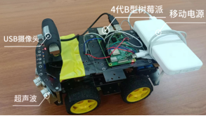
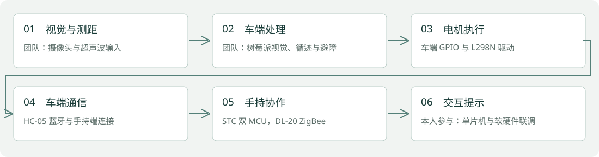
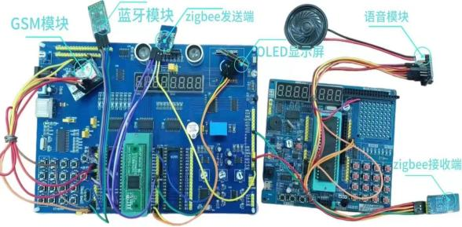

团队工程项目 · 2023.04—2023.10
智能导盲小车与手持交互终端
树莓派车端与 STC 手持端协作；保留个人负责内容与团队研究边界。
树莓派 4B+ / STC / 蓝牙 / ZigBee / 软硬件联调

业务问题与项目目标
团队设计辅助盲人出行的原型系统，通过盲道识别、绕障及手持端提示，实现人车信息交互。
个人负责内容
本人参与手持端单片机架构、相关代码编写及软硬件联合调试；为论文署名作者之一。CNN 识别和人工势场算法属于团队系统，不表述为本人独立完成。
系统架构与流程
树莓派 4B+ 处理车端视觉与运动；超声波和 L298N 连接车端 GPIO；HC-05 与手持端通信，STC 双 MCU 经 DL-20 ZigBee 协作，SIM800C 提供求助信息功能。

实现细节
- 系统架构来自已发表论文和硬件资料，车端以盲道识别和人工势场避障协作。
- 手持端组合按键、OLED、语音、蓝牙与 GSM 模块，支持控制与提示。
- 团队成果获科技创新大赛一等奖；合著论文发表于《电子制作》2024 年第 21 期。

模块选择与协作边界
树莓派承担车端图像和运动处理，STC 手持端承担按键、显示与通信。蓝牙与 ZigBee 连接不同交互节点，模块分工可由论文和实物资料核对。本人参与手持端编程和联调；没有保留完整问题追踪记录，当前不补写无法核实的故障解决案例。
运行证据与核对结果
现有仓库提供论文、系统架构与实物图片；论文署名可核对。DOI：10.16589/j.cnki.cn11-3571/tn.2024.21.013。
当前边界与后续工作
当前仓库未包含 README 所列的树莓派和 STC 完整源码目录，本页不声称可直接编译复现。论文算法指标是团队历史记录，未在本次重新测试。